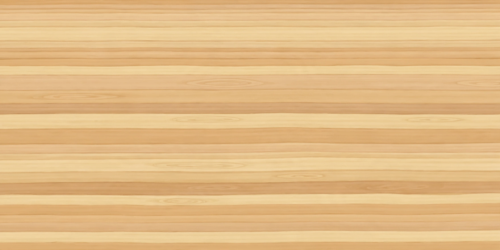
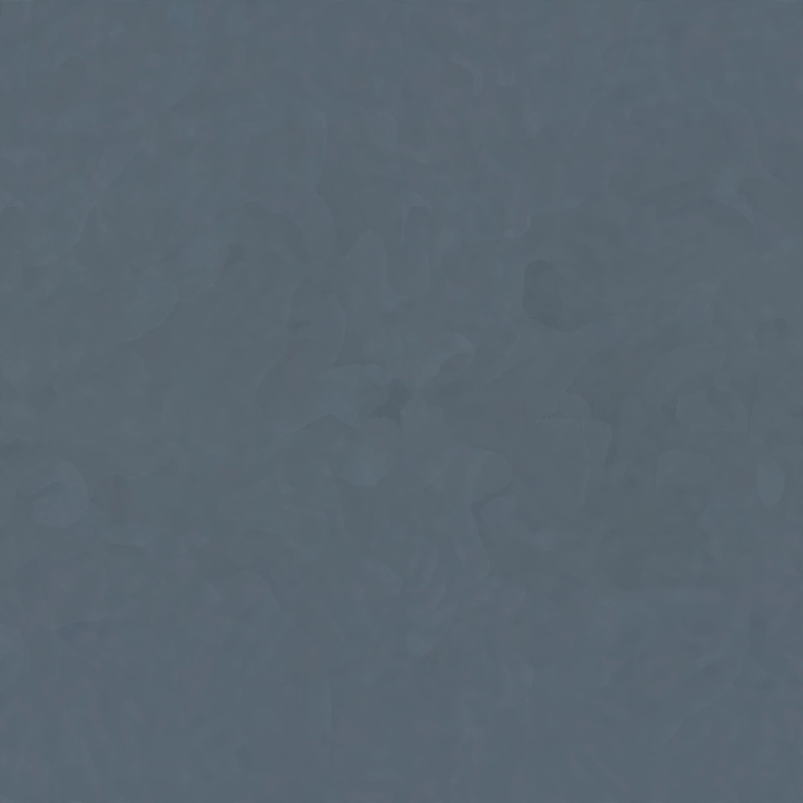

Open the updated gallery · WASD moves; Q/E changes walls.
Two Muse outputs via OpenRouter, $0.02 total. Original textures and the Animal Crossing reference guided the pass. Native output pixels are unchanged; UV mapping and a fresh Godot lightmap bake place and shade them.



23/23 paintings and navigation checks pass. Chrome remains around 60 fps; median 16.7 ms, p95 at most 16.8 ms. The character remains a back-view placeholder.